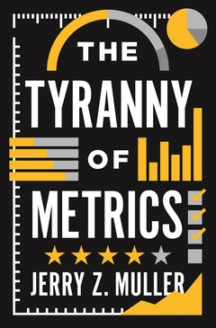

The Tyranny of Metrics, by Muller
Saturday April 25, 2020
The Tyranny of Metrics is the book version of the author's earlier article. It's a pretty good collection of concerns around measurement, focused on unintended consequences.
One thing that Muller's historical perspective brought out was the development of scientific management and management consulting as practices distinct from particular fields or businesses. I think there are parallels to the development of data science.
He also maintains that the main value of a metric can come from looking at outliers rather than tracking averages or otherwise using the metric over all cases. I think this is an often neglected focus.
There's a lot of interesting stuff. Here are some quotes that I thought were particularly interesting:
"Accountability ought to mean being held responsible for one's actions. But by a sort of linguistic sleight of hand, accountability has come to mean demonstrating success through standardized measurement, as if only that which can be counted really counts." (page 4)
"When proponents of metrics advocate "accountability," they tacitly combine two meanings of the word. On the one hand, to be accountable means to be responsible. But it can also mean "capable of being counted."" (page 17)
"This book is not about the evils of measuring. It is about the unintended consequences of trying to substitute standardized measures of performance for personal judgment based on experience. The problem is not measurement, but excessive measurement and inappropriate measurement—not metrics, but metric fixation." (page 4)
"The key components of metric fixation are
- "the belief that it is possible and desirable to replace judgment, acquired by personal experience and talent, with numerical indicators of comparative performance based upon standardized data (metrics);
- "the belief that making such metrics public (transparent) assures that institutions are actually carrying out their purposes (accountability);
- "the belief that the best way to motivate people within these organizations is by attaching rewards and penalties to their measured performance, rewards that are either monetary (pay-for-performance) or reputational (rankings)." (page 18)
"Recurring Flaws" from Chapter 2:
- "Measuring the most easily measurable"
- "measuring the simple when the desired outcome is complex"
- "Measuring inputs rather than outcomes"
- "Degrading information quality through standardization"
- "Gaming through creaming"
- "Improving numbers by lowering standards"
- "Improving numbers through omission or distortion of data"
- "Cheating"
"Under scientific management the managers assume ... the burden of gathering together all of the traditional knowledge which in the past has been possessed by the workmen and then of classifying, tabulating, and reducing this knowledge to rules, laws, formulae... Thus all of the planning which under the old system was done by the workmen, must of necessity under the new system be done by management in accordance with the law of science." (Taylor quoted pages 32-33)
"It is only through enforced standardization of methods, enforced adoption of the best implements and working conditions, and enforced cooperation that this faster work can be assured. And the duty of enforcing the adoption of standards and enforcing this cooperation rests with management alone." (Taylor quoted page 33)
"The calculative is the enemy of the imaginative." (page 61)
"This lends a certain air of unreality to the explorations of what one might call the unworldly economists, who combine hard measures of statistical validity with weak interest in the validity of the units of measurement." (page 72)
The effect of valuing quantity over quality in academic publishing leads to:
"a great stream of publications that are both uninteresting and unread." (page 79)
"This is an instance of diagnostic metrics. It provides data that can be used by a practitioner (physician), or internally within an institution (hospital), or shared among practitioners and institutions to discover what is working and what is not, and to use that information to improve performance." (page 110)
"... the metrics matter because of the way they are embedded into a larger institutional culture." (page 110)
"Extrinsic rewards become an important determinant of job satisfaction only among workers for whom intrinsic rewards are relatively unavailable." (Gruenberg quoted page 137)
"The fact that allies spy on one another to a certain degree to determine intentions, capacities, and vulnerabilities is well known to practitioners of government. But it cannot be publicly acknowledged, since it represents a threat to the amour propre of other nations." (page 164)
Chapter 15 "Unintended but predictable negative consequences":
- "Goal displacement through diversion of effort to what gets measured"
- "Promoting short-termism"
- "Costs in employee time"
- "Diminishing utility"
- "Rule cascades" (to prevent gaming the metrics, etc.)
- "Rewarding luck"
- "Discouraging risk-taking"
- "Discouraging innovation"
- "Discouraging cooperation and common purpose"
- "Degradation of work" (the experience of working people)
- "Costs to productivity"
Chapter 16 "When and how to use metrics":
- "What kind of information are you thinking of measuring?"
- "How useful is the information?"
- "How useful are more metrics?"
- "What are the costs of not relying upon standardized measurement?"
- "To what purposes will the measurement be put, or to put it another way, to whom will the information be made transparent?"
- "What are the costs of acquiring the metrics?"
- "Ask why the people at the top of the organization are demanding performance metrics."
- "How and by whom are the measures of performance developed?"
- "Remember that even the best measures are subject to corruption or goal diversion."
- "Remember that sometimes, recognizing the limits of the possible is the beginning of wisdom."
Here Muller lists a factor outside the control of the American medical system, citing page 84 of In Excellent Health by Atlas and a paper on Socioeconomic Status and Health:
"Moreover, the United States is an ethnically heterogeneous country, and some ethnic groups (such as African Americans) have disproportionately high rates of infant mortality, reflecting social, cultural, and possibly genetic factors." (p. 106)
This strikes me as, at the very least, unfortunate phrasing. Here's how some others talk about African American infant mortality rates:
"It is racism, not race itself, that threatens the lives of African American women and infants."
